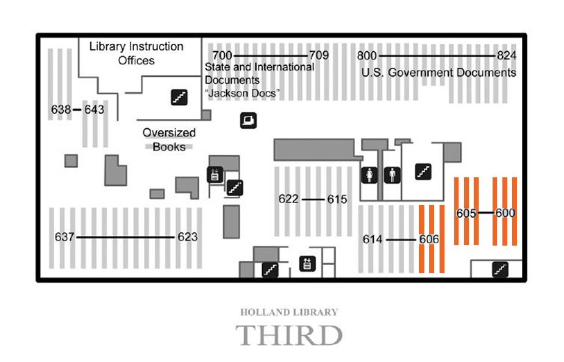
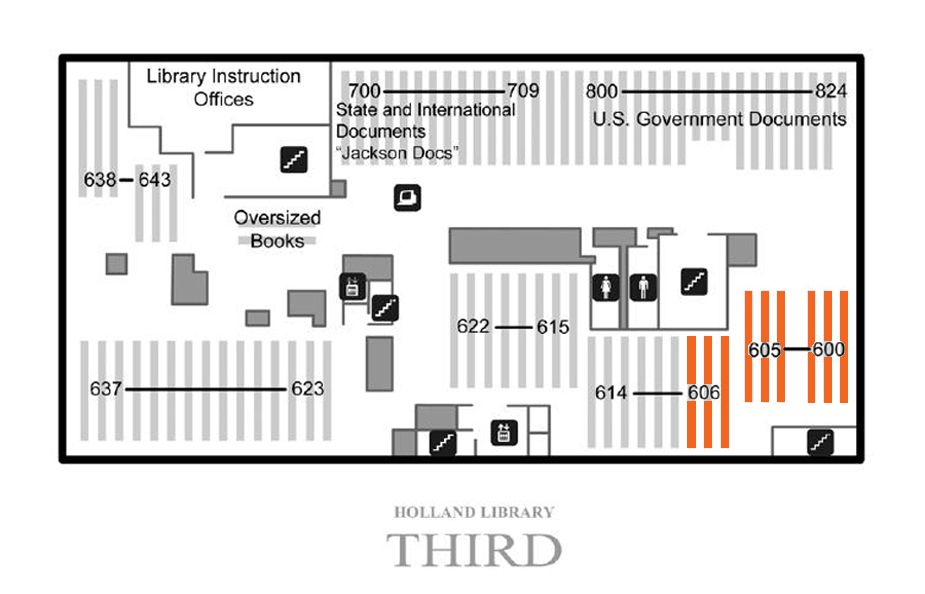
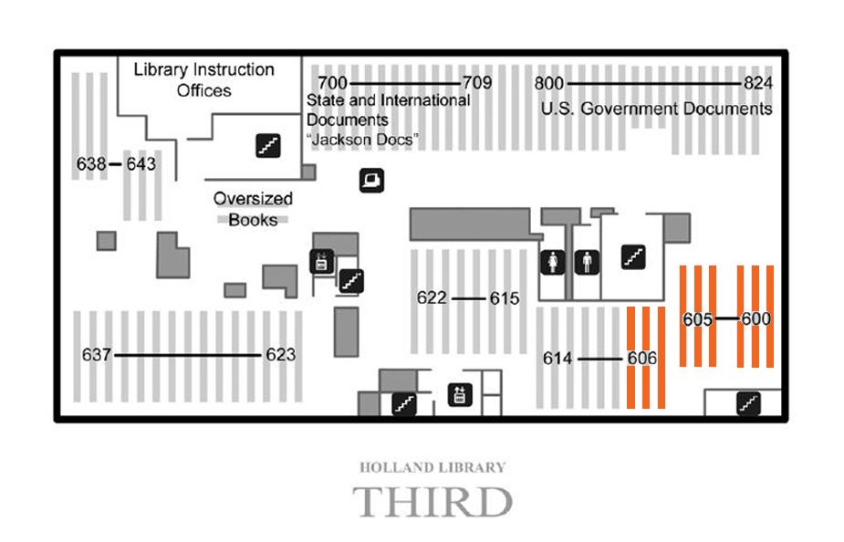

Basement
Ground
1st
2nd
3rd
Map
Mouse over the map of clickable areas to access images.

Stack #590-#608
*This subclass is located on both the Second and Third floor
Subclass PS American literature
 
Stack #590-#608

Stack #590-#608